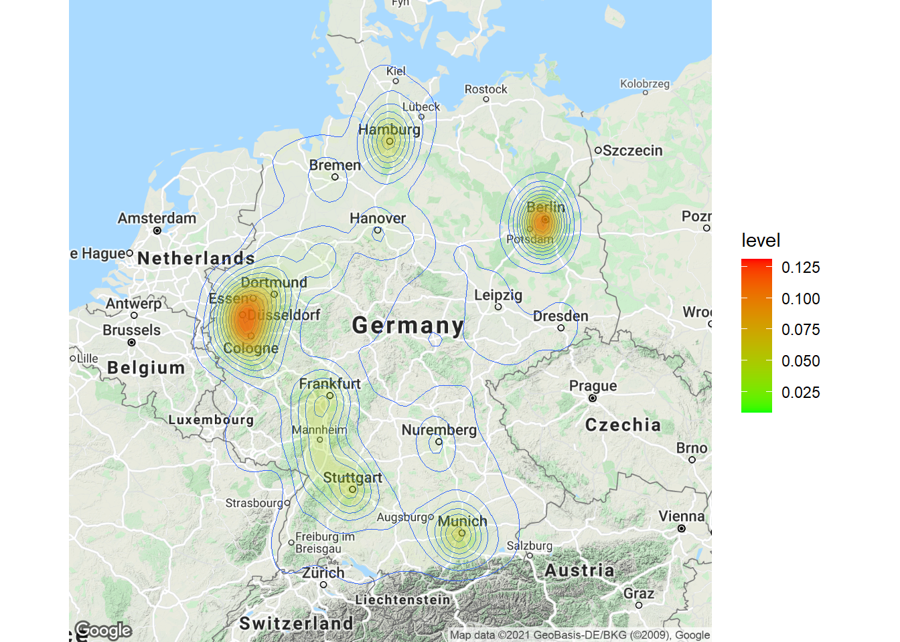
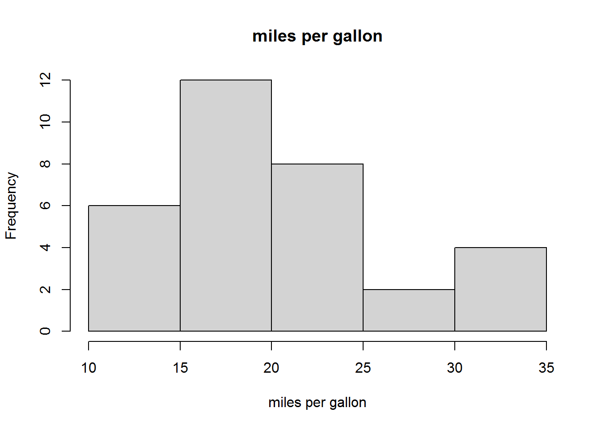

4 Summarizing data
4.1 Summary statistics
This section discusses how to produce and analyze basic summary statistics. Summary statistics are often used to describe variables in terms of 1) the central tendency of the frequency distribution, and 2) the dispersion of values.
A measure of central tendency is a single value that attempts to describe the data by identifying the central position within the data. There are various measures of central tendency as the following table shows.
| Statistic | Description | Definition |
|---|---|---|
| Mean | The average value when you sum up all elements and divide by the number of elements | \(\bar{X}=\frac{\sum_{i=1}^{n}{X_i}}{n}\) |
| Mode | The value that occurs most frequently (i.e., the highest peak of the frequency distribution) | |
| Median | The middle value when the data are arranged in ascending or descending order (i.e., the 50th percentile) |
The dispersion refers to the degree to which the data is distributed around the central tendency and can be described in terms of the range, interquartile range, variance, and standard deviation.
| Statistic | Description | Definition |
|---|---|---|
| Range | The difference between the largest and smallest values in the sample | \(Range=X_{largest}-X_{smallest}\) |
| Interquartile range | The range of the middle 50% of scores | \(IQR=Q_3-Q_1\) |
| Variance | The mean squared deviation of all the values of the mean | \(s^2=\frac{1}{n-1}*\sum_{i=1}^{n}{(X_i-\bar{X})^2}\) |
| Standard deviation | The square root of the variance | \(s_x=\sqrt{s^2}\) |
The answer to the question which measures to use depends on the level of measurement. Based on the discussion in chapter 1, we make a distinction between categorical and continuous variables, for which different statistics are permissible as summarized in the following table.
| OK to compute… | Nominal | Ordinal | Interval | Ratio |
|---|---|---|---|---|
| frequency distribution | Yes | Yes | Yes | Yes |
| median and percentiles | No | Yes | Yes | Yes |
| mean, standard deviation, standard error of the mean | No | No | Yes | Yes |
| ratio, or coefficient of variation | No | No | No | Yes |
As an example data set, we will be using a data set containing music streaming data from a popular streaming service. Let’s load and inspect the data first.
music_data <- read.table("https://raw.githubusercontent.com/IMSMWU/Teaching/master/MRDA2017/music_data_at.csv",
sep = ",", header = TRUE)
dim(music_data)## [1] 6196 19head(music_data)The data set contains information about all songs that appeared in the Top200 charts of a popular streaming service in Austria between 2017 and 2020. The dim()-function returns the dimensions of the data frame (i.e., the number of rows and columns). As can be seen, the data set comprises information for 6,196 songs and 19 variables. The variables in the data set are:
- track_id: unique ID of a song
- min_rank: the minimum chart rank
- streams: the maximum number of daily streams
- isrc: alternative song ID
- artist_id: unique ID of the performing artist
- release_date: release_date of the song
- explicit: indicates whether a song has explicit lyrics (1) or not (0)
- duration: the duration in milliseconds
- danceability, energy, loudness, speechiness, instrumentalness, liveness, valence, tempo are the audio features, describing the music style across various dimension
- label: the music label an artist is signed to
- rep_ctry: the repertoire country
- genre: the song genre
In a first step, we need to make sure all variables are in the correct format, according to these variable definitions:
music_data$release_date <- as.Date(music_data$release_date) #convert to date
music_data$explicit <- factor(music_data$explicit,
levels = 0:1, labels = c("not explicit", "explicit")) #convert to factor
music_data$label <- as.factor(music_data$label) #convert to factor
music_data$rep_ctry <- as.factor(music_data$rep_ctry) #convert to factor
music_data$genre <- as.factor(music_data$genre) #convert to factorIn the following sections, we will inspect the data in more detail.
4.1.1 Categorical variables
Categorical variables contain a finite number of categories or distinct groups and are also known as qualitative or non-metric variables. There are different types of categorical variables:
- Nominal variables: variables that have two or more categories but no logical order (e.g., music genres). A dichotomous variable (also referred to as dummy variable or binary variable) is simply a nominal variable that only has two categories (e.g., indicator for explicit lyrics).
- Ordinal variables: variables that have two or more categories that can also be ordered or ranked (e.g., chart ranks in our example).
Let’s now start to investigate the nominal variables in our data set (i.e., explicit, genre, label, rep_ctry).
As the table above shows, the only permissible operation with nominal variables is counting. That is, we can inspect the frequency distribution, which tells us how many observations we have per category. The table() function creates a frequency table that counts how many observations we have in each category.
table(music_data[, c("genre")]) #absolute frequencies##
## Classics & Jazz Electronic & Dance HipHop & Rap other
## 10 586 2898 223
## Pop Rock Soundtrack
## 1869 545 65table(music_data[, c("label")]) #absolute frequencies##
## INDEP SONY UMG WARNER
## 1441 1256 2508 991table(music_data[, c("rep_ctry")]) #absolute frequencies##
## AL AT AU BE BG BR CA CH CY CZ DE DK ES FI FR GB
## 2 271 33 9 1 1 10 26 7 4 2432 15 1 8 162 578
## GM GR HU IE IL IN IS IT KR NL NO NZ PL PT RO RS
## 1 1 1 2 3 23 1 8 12 114 32 11 3 1 1 3
## RU SE TC US ZA
## 3 100 22 2291 3table(music_data[, c("explicit")]) #absolute frequencies##
## not explicit explicit
## 3626 2570The numbers associated with the factor level in the output tell you, how many observations there are per category. For example, there are 2,898 songs from the HipHop & Rap genre.
Often, we are interested in the relative frequencies, which can be obtained by using the prop.table() function.
prop.table(table(music_data[, c("genre")])) #relative frequencies##
## Classics & Jazz Electronic & Dance HipHop & Rap other
## 0.001613944 0.094577147 0.467721110 0.035990962
## Pop Rock Soundtrack
## 0.301646223 0.087959974 0.010490639prop.table(table(music_data[, c("label")])) #relative frequencies##
## INDEP SONY UMG WARNER
## 0.2325694 0.2027114 0.4047773 0.1599419prop.table(table(music_data[, c("rep_ctry")])) #relative frequencies##
## AL AT AU BE BG BR
## 0.0003227889 0.0437378954 0.0053260168 0.0014525500 0.0001613944 0.0001613944
## CA CH CY CZ DE DK
## 0.0016139445 0.0041962556 0.0011297611 0.0006455778 0.3925112976 0.0024209167
## ES FI FR GB GM GR
## 0.0001613944 0.0012911556 0.0261459006 0.0932859910 0.0001613944 0.0001613944
## HU IE IL IN IS IT
## 0.0001613944 0.0003227889 0.0004841833 0.0037120723 0.0001613944 0.0012911556
## KR NL NO NZ PL PT
## 0.0019367334 0.0183989671 0.0051646223 0.0017753389 0.0004841833 0.0001613944
## RO RS RU SE TC US
## 0.0001613944 0.0004841833 0.0004841833 0.0161394448 0.0035506779 0.3697546804
## ZA
## 0.0004841833prop.table(table(music_data[, c("explicit")])) #relative frequencies##
## not explicit explicit
## 0.5852163 0.4147837Now the output gives you the relative frequencies. For example, the market share of Warner Music in the Austrian Top200 charts is ~16%, ~8.8% of songs are from the Rock genre, ~4.4% of songs are from Austrian artists, and ~41.5% of the songs have explicit lyrics.
Note that the above output shows the overall relative frequencies. In many cases, it is meaningful to consider conditional relative frequencies. This can be achieved by adding a ,1 to the prop.table() command, which tells R to compute the relative frequencies by row (which is in our case the genre variable). The following code can be used to show the relative frequency of songs with explicit lyrics by genre.
prop.table(table(music_data[, c("genre", "explicit")]),
1) #conditional relative frequencies## explicit
## genre not explicit explicit
## Classics & Jazz 1.00000000 0.00000000
## Electronic & Dance 0.90273038 0.09726962
## HipHop & Rap 0.26501035 0.73498965
## other 0.97757848 0.02242152
## Pop 0.83092563 0.16907437
## Rock 0.88807339 0.11192661
## Soundtrack 0.98461538 0.01538462As can be seen, the presence of explicit lyrics greatly varies across genres. While in the HipHop genre ~73% of songs have explicit lyrics, in the Rock genre, this share is only ~11.2%.
The ‘min_rank’ variable is an example of an ordinal variable. Although we can now rank order the songs with respect to their minimum chart rank, this variable doesn’t contain information about the distance between two songs. Music popularity charts are often highly skewed towards the top songs, so that the absolute difference in streams between ranks 1 and 2 is larger compared to the differences between songs with ranks, say 101 and 102. This means that the distance between ranks 1 and 2 is not the same as the distance between ranks 101 and 102. To get a measure of central tendency, we could, for example, compute the median of this variable using the median()-function.
median(music_data$min_rank)## [1] 85This means that the middle value when the data are arranged is rank number 85 (median = 50th percentile). Note that you could also compute other percentiles using the quanile()-function. For example, to get the median and the interquartile range, we could compute the 25th, 50th, and 75th percentile.
quantile(music_data$min_rank, c(0.25, 0.5, 0.75))## 25% 50% 75%
## 38.75 85.00 141.00This means that the interquartile range is between ranks 39 and 141. If you wanted to compare different genres according to these statistics, you could do this using the by()-function as follows:
by(music_data$min_rank, music_data$genre, quantile,
c(0.25, 0.5, 0.75))## music_data$genre: Classics & Jazz
## 25% 50% 75%
## 55.00 96.50 114.25
## ------------------------------------------------------------
## music_data$genre: Electronic & Dance
## 25% 50% 75%
## 43.0 90.5 144.0
## ------------------------------------------------------------
## music_data$genre: HipHop & Rap
## 25% 50% 75%
## 28 69 124
## ------------------------------------------------------------
## music_data$genre: other
## 25% 50% 75%
## 47.5 98.0 153.5
## ------------------------------------------------------------
## music_data$genre: Pop
## 25% 50% 75%
## 50 102 152
## ------------------------------------------------------------
## music_data$genre: Rock
## 25% 50% 75%
## 70 113 159
## ------------------------------------------------------------
## music_data$genre: Soundtrack
## 25% 50% 75%
## 79 113 143The results show that, for example, HipHop artists achieve higher chart ranks compared to artists from other genres and the dispersion of values (IQR) is somewhat lower for this genre. This means that artists from the HipHop Genre consistently achieve higher ranks compared to other artists from other genres.
4.1.2 Continuous variables
4.1.2.1 Descriptive statistics
Continuous variables (also know as metric variables) are numeric variables that can take on any value on a measurement scale (i.e., there is an infinite number of values between any two values). There are different types of continuous variables as we have seen in chapter 1:
- Interval variables: while the zero point is arbitrary, equal intervals on the scale represent equal differences in the property being measured. E.g., on a temperature scale measured in Celsius the difference between a temperature of 15 degrees and 25 degrees is the same difference as between 25 degrees and 35 degrees but the zero point is arbitrary (there are different scales to measure temperature, such as Fahrenheit or Celsius, and zero in this case doesn’t indicate the absence of temperature).
- Ratio variables: has all the properties of an interval variable, but also has an absolute zero point. When the variable equals 0.0, it means that there is none of that variable (e.g., the number of streams or duration variables in our example).
For interval and ratio variables we can also compute the mean as a measure of central tendency, as well as the variance and the standard deviation as measures of dispersion. Computing descriptive statistics for continuous variables is easy and there are many functions from different packages that let you calculate summary statistics (including the summary() function from the base package). In this tutorial, we will use the describe() function from the psych package. Note that you could just as well use other packages to compute the descriptive statistics (e.g., the stat.desc() function from the pastecs package). Which one you choose depends on what type of information you seek (the results provide slightly different information) and on personal preferences.
We could, for example, compute the summary statistics for the variables “streams,” “duration_ms,” “danceability,” and “valence” in our data set as follows:
library(psych)
psych::describe(music_data[, c("streams", "duration_ms",
"danceability", "valence")])## vars n mean sd median trimmed mad min
## streams 1 6196 9724.05 11153.77 6006.00 7389.25 4283.23 1235.00
## duration_ms 2 6195 200493.84 47667.10 196770.00 197686.44 34559.41 30133.00
## danceability 3 6195 0.67 0.14 0.69 0.68 0.14 0.06
## valence 4 6195 0.48 0.21 0.47 0.47 0.24 0.03
## max range skew kurtosis se
## streams 136500.00 135265.00 3.81 21.41 141.70
## duration_ms 1109080.00 1078947.00 3.39 44.98 605.62
## danceability 0.98 0.91 -0.62 0.33 0.00
## valence 0.98 0.95 0.15 -0.70 0.00You can see that the output contains measures of central tendency (e.g., the mean) and dispersion (e.g., sd) for the selected variables. It can be seen, for example, that the mean of the streams variable is 9,724 while the median is 6,006. This already tells us something about the distribution of the data. Because the mean is substantially higher than the median, we can conclude that there are a few songs with many streams, resulting in a right skew of the distribution. The median as a measure of central tendency is generally less susceptible to outliers.
In the above command, we used the psych:: prefix to avoid confusion and to make sure that R uses the describe() function from the psych package since there are many other packages that also contain a desribe() function. Note that you could also compute these statistics separately by using the respective functions (e.g., mean(), sd(), median(), min(), max(), etc.). There are many options for additional statistics for this function. For example, you could add the argument IQR = TRUE to add the interquartile range to the output.
The psych package also contains the describeBy() function, which lets you compute the summary statistics by sub-groups separately. For example, we could compute the summary statistics by genre as follows:
describeBy(music_data[, c("streams", "duration_ms",
"danceability", "valence")], music_data$genre,
skew = FALSE, range = FALSE)##
## Descriptive statistics by group
## group: Classics & Jazz
## vars n mean sd se
## streams 1 10 13729.20 7344.33 2322.48
## duration_ms 2 10 180488.80 114042.08 36063.27
## danceability 3 10 0.45 0.21 0.07
## valence 4 10 0.39 0.27 0.08
## ------------------------------------------------------------
## group: Electronic & Dance
## vars n mean sd se
## streams 1 586 7175.36 6176.63 255.15
## duration_ms 2 586 199832.24 38105.84 1574.14
## danceability 3 586 0.66 0.12 0.00
## valence 4 586 0.48 0.20 0.01
## ------------------------------------------------------------
## group: HipHop & Rap
## vars n mean sd se
## streams 1 2898 11613.50 12424.51 230.80
## duration_ms 2 2897 196080.76 53206.56 988.53
## danceability 3 2897 0.72 0.13 0.00
## valence 4 2897 0.46 0.20 0.00
## ------------------------------------------------------------
## group: other
## vars n mean sd se
## streams 1 223 15573.18 16122.11 1079.62
## duration_ms 2 223 196179.61 45117.62 3021.30
## danceability 3 223 0.58 0.16 0.01
## valence 4 223 0.54 0.23 0.02
## ------------------------------------------------------------
## group: Pop
## vars n mean sd se
## streams 1 1869 8110.02 9839.75 227.60
## duration_ms 2 1869 202909.12 36232.29 838.09
## danceability 3 1869 0.65 0.14 0.00
## valence 4 1869 0.51 0.22 0.01
## ------------------------------------------------------------
## group: Rock
## vars n mean sd se
## streams 1 545 5948.28 6808.37 291.64
## duration_ms 2 545 221585.99 49133.40 2104.64
## danceability 3 545 0.59 0.14 0.01
## valence 4 545 0.45 0.22 0.01
## ------------------------------------------------------------
## group: Soundtrack
## vars n mean sd se
## streams 1 65 5845.43 4595.23 569.97
## duration_ms 2 65 174727.02 71809.75 8906.90
## danceability 3 65 0.44 0.20 0.03
## valence 4 65 0.24 0.19 0.02In this example, we used the arguments skew = FALSE and range = FALSE to exclude some statistics from the output.
R is open to user contributions and various users have contributed packages that aim at making it easier for researchers to summarize statistics. For example, the summarytools package can be used to summarize the variables. If you would like to use this package and you are a Mac user, you may need to also install XQuartz (X11) too. To do this, go to this page and download the XQuartz-2.7.7.dmg, then open the downloaded folder and click XQuartz.pkg and follow the instruction on screen and install XQuartz. If you still encouter an error after installing XQuartz, you may find a solution <a href=“href=”https://www.xquartz.org/” target=“_blank”>here.
library(summarytools)
print(dfSummary(music_data[, c("streams", "duration_ms",
"valence", "genre", "label", "explicit")], plain.ascii = FALSE,
style = "grid", valid.col = FALSE, tmp.img.dir = "tmp"),
method = "render", headings = FALSE, footnote = NA)Error in pryr::where(obj_name) : length(name) == 1 ist nicht TRUE
| No | Variable | Stats / Values | Freqs (% of Valid) | Graph | Missing | |||||||||||||||||||||||||||||||||||
|---|---|---|---|---|---|---|---|---|---|---|---|---|---|---|---|---|---|---|---|---|---|---|---|---|---|---|---|---|---|---|---|---|---|---|---|---|---|---|---|---|
| 1 | streams [integer] |
|
5009 distinct values |  |
0 (0.0%) | |||||||||||||||||||||||||||||||||||
| 2 | duration_ms [numeric] |
|
5031 distinct values |  |
1 (0.0%) | |||||||||||||||||||||||||||||||||||
| 3 | valence [numeric] |
|
990 distinct values |  |
1 (0.0%) | |||||||||||||||||||||||||||||||||||
| 4 | genre [factor] |
|
|
 |
0 (0.0%) | |||||||||||||||||||||||||||||||||||
| 5 | label [factor] |
|
|
 |
0 (0.0%) | |||||||||||||||||||||||||||||||||||
| 6 | explicit [factor] |
|
|
 |
0 (0.0%) |
The ‘Missing’ column in the output above tells us that there is one missing value on the ‘duration_ms’ and ‘valence’ variables. We might want to exclude this observation by creating a subset of the data.
music_data <- music_data[!is.na(music_data$valence) &
!is.na(music_data$duration_ms), ]In the command above, !is.na() is used to filter the rows for observations where the respective variable does not have missing values. The “!” in this case translates to “is not” and the function is.na() checks for missing values. Hence, the entire statement can be read as “select the rows from the ‘music_data’ data set where the values of the ‘valence’ and ‘duration_ms’ variables are not missing.”
As you can see, the output also includes a visualization of the frequency distribution using a histogram for the continuous variables and a bar chart for the categorical variables. The frequency distribution is an important element that allows us to assign probabilities to observed values if the observations come from a known probability distribution. How to derive these probability statements will be discussed next.
4.1.2.2 Using frequency distributions to go beyond the data
The frequency distribution can be used to make statements about the probability that a certain observed value will occur if the observations come from a known probability distribution. For normally distributed data, the following table can be used to look up the probability that a certain value will occur. For example, the value of -1.96 has a probability of 2.5% (i.e., .0250).

Figure 1.13: Standard normal table
There are two things worth noting. First, the normal distribution has two tails as the following figure shows and we need to take the probability mass at each side of the distribution into account. Hence, there is a 2.5% probability of observing a value of -1.96 or smaller and a 2.5% of observing a value of 1.96 or larger. Hence, the probability mass within this interval is 0.95.

Figure 4.1: Standard normal distribution
The second point is related to the scale of the distribution. Since the variables that we will collect can be measured at many different scales (e.g., number of streams, duration in milliseconds), we need a way to convert the scale into a standardized measure that would allow us to compare the observations against the values from the probability table. The standardized variate, or z-score, allows us to do exactly that. It is computed as follows:
\[\begin{align} Z=\frac{X_i-\bar{X}}{s} \end{align} \]
By subtracting the mean of the variable from each observation and dividing by the standard deviation, the data is converted to a scale with mean = 0 and SD = 1, so we can use the tables of probabilities for the normal distribution to see how likely it is that a particular score will occur in the data. In other words, the z-score tells us how many standard deviations above or below the mean a particular x-value is.
To see how this works in practice, let’s inspect the distribution of the ‘tempo’ variable from the music data set, which is defined as the overall estimated tempo of a track in beats per minute (BPM). The hist()-function can be used to draw the corresponding histogram.
hist(music_data$tempo)
Figure 1.14: Histogram of tempo variable
In this case, the variable is measured on the scale “beats per minute.” To standardize this variable, we will subtract the mean of this variable from each observation and then divide by the standard deviation. We can compute the standardized variable by hand as follows:
music_data$tempo_std <- (music_data$tempo - mean(music_data$tempo))/sd(music_data$tempo)If we create the histogram again, we can see that the scale has changed and now we can compare the standardized values to the values we find in the probability table.
hist(music_data$tempo_std)
Figure 1.16: Histogram of standardized tempo variable
Not that you could have also used the scale()-function instead of computing the z-scores manually, which leads to the same result:
music_data$tempo_std <- scale(music_data$tempo)Instead of manually comparing the observed values to the values in the table, it is much easier to use the in-built functions to obtain the probabilities. The pnorm()-function gives the probability of obtaining values lower than the indicated values (i.e., the probability mass left of that value). For the value of 1.96, this probability mass is ~0.025, in line with the table above.
pnorm(-1.96)## [1] 0.0249979To also take the other end of the distribution into consideration, we would need to multiply this value by to. This way, we arrive at a value of 5%.
pnorm(-1.96) * 2## [1] 0.04999579Regarding the standard normal distribution, it is helpful to remember the following numbers, indicating the points on the standard normal distribution, where the sum of the probability mass to the left at the lower end and to the right of the upper end exceed a certain threshold:
- +/-1.645 - 10% of probability mass outside this region
- +/-1.960 - 5% of probability mass outside this region
- +/-2.580 - 1% of probability mass outside this region
Going back to our example, we could also ask: what is the probability of obtaining the minimum (or maximum) observed value in our data? The minimum value on the standardized scale is:
min(music_data$tempo_std)## [1] -3.006525And the associated probability is:
pnorm(min(music_data$tempo_std)) * 2## [1] 0.002642526Although the probability of observing this minimum value is very low, there are very few observations in the extreme regions at each end of the histogram, so this doesn’t seem too unusual. As a rule of thumb, you can remember that 68% of the observations of a normally distributed variable should be within 1 standard deviation of the mean, 95% within 2 standard deviations, and 99.7% within 3 standard deviations. This is also shown in the following plot:

Figure 1.22: The 68, 95, 99.7 rule (source: Wikipedia)
In case of our ‘tempo’ variable, we do not observe values that are more than 3 standard deviations away from the mean. In other instances, checking the standardized values of a variable may help you to identify outliers. For example, if you conducted a survey and you would like to exclude respondents who answered the survey too fast, you may exclude cases with a low probability based on the distribution of the duration variable.
4.2 Data visualization
This section discusses the important topic of data visualization and how to produce appropriate graphics to describe your data visually. You should always visualize your data first.

Figure 1.2: source: https://twitter.com/heyblake/status/1432070055949258752?s=20
The plots we created in the previous chapters used R’s in-built functions. In this section, we will be using the ggplot2 package by Hadley Wickham. It has the advantage of being fairly straightforward to learn and being very flexible when it comes to building more complex plots. For a more in depth discussion you can refer to chapter 4 of the book “Discovering Statistics Using R” by Andy Field et al. or read the following chapter from the book “R for Data science” by Hadley Wickham as well as “R Graphics Cookbook” by Winston Chang.
ggplot2 is built around the idea of constructing plots by stacking layers on top of one another. Every plot starts with the ggplot(data) function, after which layers can be added with the “+” symbol. The following figures show the layered structure of creating plots with ggplot.


4.2.1 Categorical variables
4.2.1.1 Bar plot
To give you an example of how the graphics are composed, let’s go back to the frequency table from the previous chapter, where we created a table showing the relative frequencies of songs in the Austrian streaming charts by genre.
music_data <- read.table("https://raw.githubusercontent.com/IMSMWU/Teaching/master/MRDA2017/music_data_at.csv",
sep = ",", header = TRUE)
music_data$release_date <- as.Date(music_data$release_date) #convert to date
music_data$explicit <- factor(music_data$explicit,
levels = 0:1, labels = c("not explicit", "explicit")) #convert to factor
music_data$label <- as.factor(music_data$label) #convert to factor
music_data$rep_ctry <- as.factor(music_data$rep_ctry) #convert to factor
music_data$genre <- as.factor(music_data$genre) #convert to factor
prop.table(table(music_data[, c("genre")])) #relative frequencies##
## Classics & Jazz Electronic & Dance HipHop & Rap other
## 0.001613944 0.094577147 0.467721110 0.035990962
## Pop Rock Soundtrack
## 0.301646223 0.087959974 0.010490639music_data <- music_data[!is.na(music_data$valence) &
!is.na(music_data$duration_ms), ] # exclude cases with missing valuesHow can we plot this kind of data? Since we have a categorical variable, we will use a bar plot. However, to be able to use the table for your plot, you first need to assign it to an object as a data frame using the as.data.frame()-function.
table_plot_rel <- as.data.frame(prop.table(table(music_data[,
c("genre")]))) #relative frequencies #relative frequencies
head(table_plot_rel)Since Var1 is not a very descriptive name, let’s rename the variable to something more meaningful
library(plyr)
table_plot_rel <- plyr::rename(table_plot_rel, c(Var1 = "Genre"))
head(table_plot_rel)Once we have our data set we can begin constructing the plot. As mentioned previously, we start with the ggplot() function, with the argument specifying the data set to be used. Within the function, we further specify the scales to be used using the aesthetics argument, specifying which variable should be plotted on which axis. In our example, we would like to plot the categories on the x-axis (horizontal axis) and the relative frequencies on the y-axis (vertical axis).
library(ggplot2)
bar_chart <- ggplot(table_plot_rel, aes(x = Genre,
y = Freq))
bar_chart
Figure 1.5: Bar chart (step 1)
You can see that the coordinate system is empty. This is because so far, we have told R only which variables we would like to plot but we haven’t specified which geometric figures (points, bars, lines, etc.) we would like to use. This is done using the geom_xxx() function. ggplot includes many different geoms, for a wide range of plots (e.g., geom_line, geom_histogram, geom_boxplot, etc.). A good overview of the various geom functions can be found here. In our case, we would like to use a bar chart for which geom_col is appropriate.
bar_chart + geom_col()Figure 1.6: Bar chart (step 2)
Now we have specified the data, the scales and the shape. Specifying this information is essential for plotting data using ggplot. Everything that follows now just serves the purpose of making the plot look nicer by modifying the appearance of the plot. How about some more meaningful axis labels? We can specify the axis labels using the ylab() and xlab() functions:
bar_chart + geom_col() + ylab("Relative frequency") +
xlab("Genre")Figure 1.7: Bar chart (step 3)
How about adding some value labels to the bars? This can be done using geom_text(). Note that the sprintf() function is not mandatory and is only added to format the numeric labels here. The function takes two arguments: the first specifies the format wrapped in two % signs. Thus, %.0f means to format the value as a fixed point value with no digits after the decimal point, and %% is a literal that prints a “%” sign. The second argument is simply the numeric value to be used. In this case, the relative frequencies multiplied by 100 to obtain the percentage values. Using the vjust = argument, we can adjust the vertical alignment of the label. In this case, we would like to display the label slightly above the bars.
bar_chart + geom_col() + ylab("Relative frequency") +
xlab("Genre") + geom_text(aes(label = sprintf("%.0f%%",
Freq/sum(Freq) * 100)), vjust = -0.2)
Figure 1.8: Bar chart (step 4)
We could go ahead and specify the appearance of every single element of the plot now. However, there are also pre-specified themes that include various formatting steps in one singe function. For example theme_bw() would make the plot appear like this:
bar_chart + geom_col() + ylab("Relative frequency") +
xlab("Genre") + geom_text(aes(label = sprintf("%.0f%%",
Freq/sum(Freq) * 100)), vjust = -0.2) + theme_bw()
Figure 1.9: Bar chart (step 5)
and theme_minimal() looks like this:
bar_chart + geom_col() + ylab("Relative frequency") +
xlab("Genre") + geom_text(aes(label = sprintf("%.0f%%",
Freq/sum(Freq) * 100)), vjust = -0.2) + theme_minimal()Figure 1.10: Bar chart (options 1)
In a next step, let’s prevent the axis labels from overlapping by rotating the labels.
bar_chart + geom_col() + ylab("Relative frequency") +
xlab("Genre") + geom_text(aes(label = sprintf("%.0f%%",
Freq/sum(Freq) * 100)), vjust = -0.2) + theme_minimal() +
theme(axis.text.x = element_text(angle = 45, vjust = 0.75))Figure 1.11: Bar chart (options 1)
We could also add a title and combine all labels using the labs function.
bar_chart + geom_col() + labs(x = "Genre", y = "Relative frequency",
title = "Chart songs by genre") + geom_text(aes(label = sprintf("%.0f%%",
Freq/sum(Freq) * 100)), vjust = -0.2) + theme_minimal() +
theme(axis.text.x = element_text(angle = 45, vjust = 0.75),
plot.title = element_text(hjust = 0.5, color = "#666666"))Figure 1.12: Bar chart (options 1)
We could also add some color to the bars using scale_fill_brewer, which comes with a range of color palettes.
bar_chart + geom_col(aes(fill = Genre)) + labs(x = "Genre",
y = "Relative frequency", title = "Chart share by genre") +
geom_text(aes(label = sprintf("%.0f%%", Freq/sum(Freq) *
100)), vjust = -0.2) + theme_minimal() + ylim(0,
0.5) + scale_fill_brewer(palette = "Blues") + theme(axis.text.x = element_text(angle = 45,
vjust = 0.75), plot.title = element_text(hjust = 0.5,
color = "#666666"), legend.title = element_blank())Figure 1.13: Bar chart (options 1)
These were examples of built-in formatting options of ggolot(), where the default is theme_classic(). For even more options, check out the ggthemes package, which includes formats for specific publications. You can check out the different themes here. For example theme_economist() uses the formatting of the journal “The Economist”:
library(ggthemes)
bar_chart + geom_col() + labs(x = "Genre", y = "Relative frequency",
title = "Chart songs by genre") + geom_text(aes(label = sprintf("%.0f%%",
Freq/sum(Freq) * 100)), vjust = -0.2) + theme_economist() +
ylim(0, 0.5) + theme(axis.text.x = element_text(angle = 45,
vjust = 0.55), plot.title = element_text(hjust = 0.5,
color = "#666666"))
Figure 4.1: Bar chart (options 2)
There are various similar packages with pre-specified themes, like the ggthemr package, the ggtech package, the rockthemes package, or the tvthemes package.
In a next step, we might want to investigate whether the relative frequencies differ between songs with explicit and song without explicit lyrics. For this purpose we first construct the conditional relative frequency table from the previous chapter again. Recall that the latter gives us the relative frequency within a group (in our case genres), as compared to the relative frequency within the entire sample.
table_plot_cond_rel <- as.data.frame(prop.table(table(music_data[,
c("genre", "explicit")]), 2)) #conditional relative frequencies
table_plot_cond_relWe can now take these tables to construct plots grouped by explicitness. To achieve this we simply need to add the facet_wrap() function, which replicates a plot multiple times, split by a specified grouping factor. Note that the grouping factor has to be supplied in R’s formula notation, hence it is preceded by a “~” symbol.
ggplot(table_plot_cond_rel, aes(x = genre, y = Freq)) +
geom_col(aes(fill = genre)) + facet_wrap(~explicit) +
labs(x = "", y = "Relative frequency", title = "Distribution of genres for explicit and non-explicit songs") +
geom_text(aes(label = sprintf("%.0f%%", Freq *
100)), vjust = -0.2) + theme_minimal() + ylim(0,
1) + scale_fill_brewer(palette = "Blues") + theme(axis.text.x = element_text(angle = 45,
vjust = 1.1, hjust = 1), plot.title = element_text(hjust = 0.5,
color = "#666666"), legend.position = "none")Figure 1.15: Grouped bar chart (facet_wrap)
Alternatively, we might be interested to investigate the relative frequencies of explicit and non-explicit lyrics for each genre. To achieve this, we can also use the fill argument, which tells ggplot to fill the bars by a specified variable (in our case “explicit”). The position = “dodge” argument causes the bars to be displayed next to each other (as opposed to stacked on top of one another).
table_plot_cond_rel_1 <- as.data.frame(prop.table(table(music_data[,c("genre", "explicit")]),1)) #conditional relative frequencies
ggplot(table_plot_cond_rel_1, aes(x = genre, y = Freq, fill = explicit)) + #use "fill" argument for different colors
geom_col(position = "dodge") + #use "dodge" to display bars next to each other (instead of stacked on top)
geom_text(aes(label = sprintf("%.0f%%", Freq * 100)),position=position_dodge(width=0.9), vjust=-0.25) +
scale_fill_brewer(palette = "Blues") +
labs(x = "Genre", y = "Relative frequency", title = "Explicit lyrics share by genre") +
theme_minimal() +
theme(axis.text.x = element_text(angle=45,vjust=1.1,hjust=1),
plot.title = element_text(hjust = 0.5,color = "#666666"),
legend.position = "none"
) Figure 1.16: Grouped bar chart (fill)
4.2.1.2 Pie chart
We could also visualize the same information using a pie chart.
ggplot(subset(table_plot_rel,Freq > 0), aes(x="", y=Freq, fill=Genre)) + # Create a basic bar
geom_bar(stat="identity", width=1) +
coord_polar("y", start=0) + #Convert to pie (polar coordinates)
geom_text(aes(label = paste0(round(Freq*100), "%")), position = position_stack(vjust = 0.5)) + #add labels
scale_fill_brewer(palette = "Blues") +
labs(x = NULL, y = NULL, fill = NULL, title = "Spotify tracks by Genre") + #remove labels and add title
theme_minimal() +
theme(axis.line = element_blank(), # Tidy up the theme
axis.text = element_blank(),
axis.ticks = element_blank(),
plot.title = element_text(hjust = 0.5, color = "#666666")) 
4.2.1.3 Covariation plots
To visualize the co-variation between categorical variables, you’ll need to count the number of observations for each combination stored in the frequency table. Say, we wanted to investigate the association between the popularity of a song and the level of ‘speechiness.’ For this exercise, let’s assume we have both variables measured as categorical (factor) variables. We can use the quantcut() function to create categorical variables based on the continuous variables. All we need to do is tell the function how many categories we would like to obtain and it will divide the data based on the percentiles equally.
library(gtools)## Warning: Paket 'gtools' wurde unter R Version 4.0.5 erstelltmusic_data$streams_cat <- as.numeric(quantcut(music_data$streams,
5, na.rm = TRUE))
music_data$speech_cat <- as.numeric(quantcut(music_data$speechiness,
3, na.rm = TRUE))
music_data$streams_cat <- factor(music_data$streams_cat,
levels = 1:5, labels = c("low", "low-med", "medium",
"med-high", "high")) #convert to factor
music_data$speech_cat <- factor(music_data$speech_cat,
levels = 1:3, labels = c("low", "medium", "high")) #convert to factorNow we have multiple ways to visualize a relationship between the two variables with ggplot. One option would be to use a variation of the scatterplot which counts how many points overlap at any given point and increases the dot size accordingly. This can be achieved with geom_count() as the example below shows where the stat(prop) argument assures that we get relative frequencies and with the group argument we tell R to compute the relative frequencies by speechiness.
ggplot(data = music_data) + geom_count(aes(x = speech_cat,
y = streams_cat, size = stat(prop), group = speech_cat)) +
ylab("Popularity") + xlab("Speechiness") + labs(size = "Proportion") +
theme_bw()Figure 1.19: Covariation between categorical data (1)
The plot shows that there appears to be a positive association between the popularity of a song and its level of speechiness.
Another option would be to use a tile plot that changes the color of the tile based on the frequency of the combination of factors. To achieve this, we first have to create a dataframe that contains the relative frequencies of all combinations of factors. Then we can take this dataframe and pass it to geom_tile(), while specifying that the fill of each tile should be dependent on the observed frequency of the factor combination, which is done by specifying the fill in the aes() function.
table_plot_rel <- prop.table(table(music_data[, c("speech_cat",
"streams_cat")]), 1)
table_plot_rel <- as.data.frame(table_plot_rel)
ggplot(table_plot_rel, aes(x = speech_cat, y = streams_cat)) +
geom_tile(aes(fill = Freq)) + ylab("Populartiy") +
xlab("Speechiness") + theme_bw()Figure 1.20: Covariation between categorical data (2)
4.2.2 Continuous variables
4.2.2.1 Histogram
Histograms can be created for continuous data using the geom_histogram() function. Note that the aes() function only needs one argument here, since a histogram is a plot of the distribution of only one variable. As an example, let’s consider our data set containing the music data:
head(music_data)Now we can create the histogram using geom_histogram(). The argument binwidth specifies the range that each bar spans, col = "black" specifies the border to be black and fill = "darkblue" sets the inner color of the bars to dark blue. For brevity, we have now also started naming the x and y axis with the single function labs(), instead of using the two distinct functions xlab() and ylab().
ggplot(music_data, aes(streams)) + geom_histogram(binwidth = 4000,
col = "black", fill = "darkblue") + labs(x = "Number of streams",
y = "Frequency", title = "Distribution of streams") +
theme_bw()Figure 1.22: Histogram
If you would like to highlight certain points of the distribution, you can use the geom_vline (short for vertical line) function to do this. For example, we may want to highlight the mean and the median of the distribution.
ggplot(music_data, aes(streams)) + geom_histogram(binwidth = 4000,
col = "black", fill = "darkblue") + labs(x = "Number of streams",
y = "Frequency", title = "Distribution of streams",
subtitle = "Red vertical line = mean, green vertical line = median") +
geom_vline(xintercept = mean(music_data$streams),
color = "red", size = 1) + geom_vline(xintercept = median(music_data$streams),
color = "green", size = 1) + theme_bw()Figure 1.23: Histogram 2
In this case, you should indicate what the lines refer to. In the plot above, the ‘subtitle’ argument was used to add this information to the plot.
Note the difference between a bar chart and the histogram. While a bar chart is used to visualize the frequency of observations for categorical variables, the histogram shows the frequency distribution for continuous variables.
4.2.2.2 Boxplot
Another common way to display the distribution of continuous variables is through boxplots. ggplot will construct a boxplot if given the geom geom_boxplot(). In our case we might want to show the difference in streams between the genres. For this analysis, we will transform the streaming variable using a logarithmic transformation, which is common with such data (as we will see later). So let’s first create a new variable by taking the logarithm of the streams variable.
music_data$log_streams <- log(music_data$streams)Now, let’s create a boxplot based on these variables and plot the log-transformed number of streams by genre.
ggplot(music_data, aes(x = genre, y = log_streams,
fill = genre)) + geom_boxplot(coef = 3) + labs(x = "Genre",
y = "Number of streams (log-scale)") + theme_minimal() +
scale_fill_brewer(palette = "Blues") + theme(axis.text.x = element_text(angle = 45,
vjust = 1.1, hjust = 1), plot.title = element_text(hjust = 0.5,
color = "#666666"), legend.position = "none")Figure 1.25: Boxplot by group
The following graphic shows you how to interpret the boxplot:

Information contained in a Boxplot
Note that you could also flip the boxplot. To do this, you only need to exchange the x- and y-variables. If we provide the categorical variable to the y-axis as follows, the axis will be flipped.
ggplot(music_data, aes(x = log_streams, y = genre,
fill = genre)) + geom_boxplot(coef = 3) + labs(x = "Number of streams (log-scale)",
y = "Genre") + theme_minimal() + scale_fill_brewer(palette = "Blues") +
theme(plot.title = element_text(hjust = 0.5, color = "#666666"),
legend.position = "none")
Figure 4.2: Boxplot by group
It is often meaningful to augment the boxplot with the data points using geom_jitter(). This way, differences in the distribution of the variable between the genres become even more apparent.
ggplot(music_data, aes(x = log_streams, y = genre)) +
geom_boxplot(coef = 3) + labs(x = "Number of streams (log-scale)",
y = "Genre") + theme_minimal() + geom_jitter(colour = "red",
alpha = 0.1)Figure 4.3: Boxplot by group
In case you would like to create the boxplot on the total data (i.e., not by group), just leave the x = argument within the aes() function empty:
ggplot(music_data, aes(x = log_streams, y = "")) +
geom_boxplot(coef = 3, width = 0.3) + labs(x = "Number of streams (log-scale)",
y = "")
Figure 4.4: Single Boxplot
4.2.2.3 Plot of means
Another way to get an overview of the difference between two groups is to plot their respective means with confidence intervals. The mean and confidence intervals will enter the plot separately, using the geoms geom_bar() and geom_errorbar(). Don’t worry if you don’t know exactly how to interpret the confidence interval at this stage - we will cover this topic in the next chapter. Let’s assume we would like to plot the difference in streams between the HipHop & Rap genre and all other genres. For this, we first need to create a dummy variable (i.e., a categorical variable with two levels) that indicates if a song is from the HipHop & Rap genre or from any of the other genres. We can use the ifelse() function to do this, which takes 3 arguments, namely 1) the if-statement, 2) the returned value if this if-statement is true, and 3) the value if the if-statement is not true.
music_data$genre_dummy <- as.factor(ifelse(music_data$genre ==
"HipHop & Rap", "HipHop & Rap", "other"))To make plotting the desired comparison easier, we can compute all relevant statistics first, using the summarySE() function from the Rmisc package.
library(Rmisc)
mean_data <- summarySE(music_data, measurevar = "streams",
groupvars = c("genre_dummy"))
mean_dataThe output tells you how many observations there are per group, the mean number of streams per group, as well as the group-specific standard deviation, the standard error, and the confidence interval (more on this in the next chapter). You can now create the plot as follows:
ggplot(mean_data, aes(x = genre_dummy, y = streams)) +
geom_bar(position = position_dodge(0.9), colour = "black",
fill = "#CCCCCC", stat = "identity", width = 0.65) +
geom_errorbar(position = position_dodge(0.9), width = 0.15,
aes(ymin = streams - ci, ymax = streams + ci)) +
theme_bw() + labs(x = "Genre", y = "Average number of streams",
title = "Average number of streams by genre") +
theme_bw() + theme(plot.title = element_text(hjust = 0.5,
color = "#666666"))
Figure 4.5: Plot of means
As can be seen, there is a large difference between the genres with respect to the average number of streams.
4.2.2.4 Grouped plot of means
We might also be interested to investigate a second factor. Say, we would like to find out if there is a difference between genres with respect to the lyrics (i.e., whether the lyrics are explicit or not). Can we find evidence that explicit lyrics affect streams of songs from the HipHop & Rap genre differently compared to other genres. We can compute the statistics using the summarySE() function by simply adding the second variable to the ‘groupvars’ argument.
mean_data2 <- summarySE(music_data, measurevar = "streams",
groupvars = c("genre_dummy", "explicit"))
mean_data2Now we obtained the results for four different groups (2 genres x 2 lyric types) and we can amend the plot easily by adding the ‘fill’ argument to the ggplot() function. The scale_fill_manual() function is optional and specifies the color of the bars manually.
ggplot(mean_data2, aes(x = genre_dummy, y = streams,
fill = explicit)) + geom_bar(position = position_dodge(0.9),
colour = "black", stat = "identity") + geom_errorbar(position = position_dodge(0.9),
width = 0.2, aes(ymin = streams - ci, ymax = streams +
ci)) + scale_fill_manual(values = c("#CCCCCC",
"#FFFFFF")) + theme_bw() + labs(x = "Genre", y = "Average number of streams",
title = "Average number of streams by genre and lyric type") +
theme_bw() + theme(plot.title = element_text(hjust = 0.5,
color = "#666666"))
Figure 4.6: Grouped plot of means
The results of the analysis show that also in the HipHop & Rap genre, songs with non-explicit lyrics obtain more streams on average, contrary to our expectations.
4.2.2.5 Scatter plot
The most common way to show the relationship between two continuous variables is a scatterplot. As an example, let’s investigate if there is an association between the number of streams a song receives and the speechiness of the song. The following code creates a scatterplot with some additional components. The geom_smooth() function creates a smoothed line from the data provided. In this particular example we tell the function to draw the best possible straight line (i.e., minimizing the distance between the line and the points) through the data (via the argument method = "lm"). Note that the “shape = 1” argument passed to the geom_point() function produces hollow circles (instead of solid) and the “fill” and “alpha” arguments passed to the geom_smooth() function specify the color and the opacity of the confidence interval, respectively.
ggplot(music_data, aes(speechiness, log_streams)) +
geom_point(shape = 1) + labs(x = "Genre", y = "Relative frequency") +
geom_smooth(method = "lm", fill = "blue", alpha = 0.1) +
labs(x = "Speechiness", y = "Number of streams (log-scale)",
title = "Scatterplot of streams and speechiness") +
theme_bw() + theme(plot.title = element_text(hjust = 0.5,
color = "#666666"))
Figure 4.7: Scatter plot
As you can see, there appears to be a positive relationship between advertising and sales.
4.2.2.5.1 Grouped scatter plot
It could be that customers from different store respond differently to advertising. We can visually capture such differences with a grouped scatter plot. By adding the argument colour = store to the aesthetic specification, ggplot automatically treats the two stores as distinct groups and plots accordingly.
ggplot(music_data, aes(speechiness, log_streams, colour = explicit)) +
geom_point(shape = 1) + geom_smooth(method = "lm",
alpha = 0.1) + labs(x = "Speechiness", y = "Number of streams (log-scale)",
title = "Scatterplot of streams and speechiness by lyric type",
colour = "Explicit") + scale_color_manual(values = c("lightblue",
"darkblue")) + theme_bw() + theme(plot.title = element_text(hjust = 0.5,
color = "#666666"))
Figure 4.8: Grouped scatter plot
It appears from the plot that the association between speechiness and the number of streams is stronger for songs without explicit lyrics.
4.2.2.6 Line plot
Another important type of plot is the line plot used if, for example, you have a variable that changes over time and you want to plot how it develops over time. To demonstrate this we will investigate a data set that show the development of the number of streams of the Top200 songs on a popular music streaming service for different region. Let’s investigate the data first and bring all variables to the correct format.
music_data_ctry <- read.table("https://raw.githubusercontent.com/IMSMWU/Teaching/master/MRDA2017/streaming_charts_ctry.csv",
sep = ",", header = TRUE)
music_data_ctry$week <- as.Date(music_data_ctry$week)
music_data_ctry$region <- as.factor(music_data_ctry$region)
head(music_data_ctry)In a first step, let’s investigate the development for Austria, by subsetting the data to region ‘at.’
music_data_at <- subset(music_data_ctry, region ==
"at")Given the correct aes() and geom specification ggplot constructs the correct plot for us.
ggplot(music_data_at, aes(x = week, y = streams)) +
geom_line() + labs(x = "Week", y = "Total streams in Austria",
title = "Weekly number of streams in Austria") +
theme_bw() + theme(plot.title = element_text(hjust = 0.5,
color = "#666666"))
Figure 4.9: Line plot
There appears to be a positive trend in the market. Now let’s compare Austria to other countries. Note that the %in% operator checks for us if any of the region names specified in the vector are included in the region column.
music_data_at_compare <- subset(music_data_ctry, region %in%
c("at", "de", "ch", "se", "dk", "nl"))We can now include the other specified countries in the plot by using the ‘color’ argument.
ggplot(music_data_at_compare, aes(x = week, y = streams,
color = region)) + geom_line() + labs(x = "Week",
y = "Total streams", title = "Weekly number of streams by country") +
theme_bw() + theme(plot.title = element_text(hjust = 0.5,
color = "#666666"))
Figure 4.10: Line plot (by region)
One issue in plot like this can be that the scales between countries is very different (i.e., in Germany there are many more streams because Germany is larger than the other countries). You could also use the facet_wrap() function to create one individual plot by region and specify ‘scales = “free_y”’ so that each individual plot has its own scale on the y-axis. We should also indicate the number of streams in millions by dividing the number of streams.
ggplot(music_data_at_compare, aes(x = week, y = streams/1000000)) +
geom_line() + facet_wrap(~region, scales = "free_y") +
labs(x = "Week", y = "Total streams (in million)",
title = "Weekly number of streams by country") +
theme_bw() + theme(plot.title = element_text(hjust = 0.5,
color = "#666666"))Figure 4.11: Line plot (facet wrap)
Now it’s easier to see that the trends are different between countries. While Sweden and Denmark appear to be saturated, the other market show strong growth.
4.2.2.7 Area plots
A slightly different why to plot this data is through area plot using the geom_area() function.
ggplot(music_data_at_compare, aes(x = week, y = streams/1000000)) +
geom_area(fill = "steelblue", color = "steelblue",
alpha = 0.5) + facet_wrap(~region, scales = "free_y") +
labs(x = "Week", y = "Total streams (in million)",
title = "Weekly number of streams by country") +
theme_bw() + theme(plot.title = element_text(hjust = 0.5,
color = "#666666"))
Figure 4.12: Line plot (facet wrap)
If the relative share of the overall streaming volume is of interest, you could use a stacked area plot to visualize this.
ggplot(music_data_at_compare, aes(x = week, y = streams/1000000,
group = region, fill = region, color = region)) +
geom_area(position = "stack", alpha = 0.65) + labs(x = "Week",
y = "Total streams (in million)", title = "Weekly number of streams by country") +
theme_bw() + theme(plot.title = element_text(hjust = 0.5,
color = "#666666"))
Figure 4.13: Line plot (facet wrap)
In this type of plot it is easy to spot the relative size of the regions.
In some cases it could also make sense to add a secondary y-axis, for example, if you would like to compare two regions with very different scales in one plot. Let’s assume, we would like to compare Austria and Sweden and take the corresponding subset.
music_data_at_se_compare <- subset(music_data_ctry,
region %in% c("at", "se"))In order to add the secondary y-axis, we need the data in a slightly different format where we have one column for each country. This is called the ‘wide format’ as opposed to the ‘long format’ where the data is stacked on top of each other for all regions. We can easily convert the data to the wide format by using the spread() function from the tidyr package.
library(tidyr)
data_wide <- spread(music_data_at_se_compare, region,
streams)
data_wideAs another intermediate step, we need to compute the ratio between the two variables we would like to plot on the two axis, since the scale of the second axis is determined based on the ratio with the other variable.
ratio <- mean(data_wide$at/1000000)/mean(data_wide$se/1000000)Now we can create the plot with the secondary y-axis as follows:
ggplot(data_wide) + geom_area(aes(x = week, y = at/1000000,
colour = "Austria", fill = "Austria"), alpha = 0.5) +
geom_area(aes(x = week, y = (se/1000000) * ratio,
colour = "Sweden", fill = "Sweden"), alpha = 0.5) +
scale_y_continuous(sec.axis = sec_axis(~./ratio,
name = "Total streams SE (in million)")) +
scale_fill_manual(values = c("#999999", "#E69F00")) +
scale_colour_manual(values = c("#999999", "#E69F00"),
guide = FALSE) + theme_minimal() + labs(x = "Week",
y = "Total streams AT (in million)", title = "Weekly number of streams by country") +
theme(plot.title = element_text(hjust = 0.5, color = "#666666"),
legend.title = element_blank(), legend.position = "bottom")Figure 4.14: Secondary y-axis
In this plot it is easy to see the difference in trends between the countries.
4.2.3 Saving plots
To save the last displayed plot, simply use the function ggsave(), and it will save the plot to your working directory. Use the arguments heightand width to specify the size of the file. You may also choose the file format by adjusting the ending of the file name. E.g., file_name.jpg will create a file in JPG-format, whereas file_name.png saves the file in PNG-format, etc..
ggsave("test_plot.jpg", height = 5, width = 8.5)4.2.4 ggplot extensions
As the ggplot2 package became more and more popular over the past years, more and more extensions have been developed by users that can be used for specific purposes that are not yet covered by the standard functionality of ggplot2. You can find a list of the extensions here. Below, you can find some example for the additional options.
4.2.4.1 Results of statistical tests (ggstatsplot)
You may use the ggstatplot package to augment your plots with the results from statistical tests, such as an ANOVA. You can find a presentation about the capabilities of this package here. The boxplot below shows an example.
library(ggstatsplot)
# music_data_subs <- subset(music_data, genre
# %in% c('HipHop & Rap',
# 'Soundtrack','Pop','Rock')) ggbetweenstats(
# data = music_data_subs, title = 'Number of
# streams by genre', # title for the plot
# plot.type = 'box', x = genre, # 2 groups y =
# log_streams, type = 'p', # default messages =
# FALSE, bf.message = FALSE, pairwise.comparisons
# = TRUE # display results from pairwise
# comparisons )4.2.4.1.1 Combination of plots (ggExtra)
Using the ggExtra() package, you may combine two type of plots. For example, the following plot combines a scatterplot with a histogram:
library(ggExtra)
p <- ggplot(music_data, aes(x = speechiness, y = log_streams)) +
geom_point() + labs(x = "Speechiness", y = "Number of streams (log-scale)",
title = "Scatterplot & histograms of streams and speechiness") +
theme_bw() + theme(plot.title = element_text(hjust = 0.5,
color = "#666666"))
ggExtra::ggMarginal(p, type = "histogram")
Figure 4.15: Scatter plot with histogram
In this case, the type = "histogram" argument specifies that we would like to plot a histogram. However, you could also opt for type = "boxplot" or type = "density" to use a boxplot or density plot instead.
4.2.4.2 Location data (ggmap)
Now that we have covered the most important plots, we can look at what other type of data you may come across. One type of data that is increasingly available is the geo-location of customers and users (e.g., from app usage data). The following data set contains the app usage data of Shazam users from Germany. The data contains the latitude and longitude information where a music track was “shazamed.”
library(ggmap)
library(dplyr)
geo_data <- read.table("https://raw.githubusercontent.com/IMSMWU/Teaching/master/MRDA2017/geo_data.dat",
sep = "\t", header = TRUE)
head(geo_data)There is a package called “ggmap,” which is an augmentation for the ggplot packages. It lets you load maps from different web services (e.g., Google maps) and maps the user location within the coordination system of ggplot. With this information, you can create interesting plots like heat maps. We won’t go into detail here but you may go through the following code on your own if you are interested. However, please note that you need to register an API with Google in order to make use of this package.
# register_google(key = 'your_api_key')
# Download the base map
de_map_g_str <- get_map(location = c(10.018343, 51.133481),
zoom = 6, scale = 2) # results in below map (wohoo!)
# Draw the heat map
ggmap(de_map_g_str, extent = "device") + geom_density2d(data = geo_data,
aes(x = lon, y = lat), size = 0.3) + stat_density2d(data = geo_data,
aes(x = lon, y = lat, fill = ..level.., alpha = ..level..),
size = 0.01, bins = 16, geom = "polygon") + scale_fill_gradient(low = "green",
high = "red") + scale_alpha(range = c(0, 0.3),
guide = FALSE)
Learning check
(LC4.1) For which data types is it meaningful to compute the mean?
- Nominal
- Ordinal
- Interval
- Ratio
(LC4.2) How can you compute the standardized variate of a variable X?
- \(Z=\frac{X_i-\bar{X}}{s}\)
- \(Z=\frac{\bar{X}+X_i}{s}\)
- \(Z=\frac{s}{\bar{X}+X_i}\)
- \(Z=s*({\bar{X}+X_i)}\)
- None of the above
You wish to analyze the following data frame ‘df’ containing information about cars
(LC4.3) How could you add a new variable containing the z-scores of the variable ‘mpg’ in R?
-
df$mpg_std <- zscore(df$mpg) -
df$mpg_std <- stdv(df$mpg) -
df$mpg_std <- std.scale(df$mpg) -
df$mpg_std <- scale(df$mpg) - None of the above
(LC4.4) How could you produce the below output?
-
describe(mtcars[,c("hp","mpg","qsec")]) -
summary(mtcars[,c("hp","mpg","qsec")]) -
table(mtcars[,c("hp","mpg","qsec")]) -
str(mtcars[,c("hp","mpg","qsec")]) - None of the above
(LC4.5) The last column “carb” indicates the number of carburetors each model has. By using a function we got to know the number of car models that have a certain number carburetors. Which function helped us to obtain this information?
##
## 1 2 3 4 6 8
## 7 10 3 10 1 1-
describe(mtcars$carb) -
table(mtcars$carb) -
str(mtcars$carb) -
prop.table(mtcars$carb) - None of the above
(LC4.6) What type of data can be meaningfully depicted in a scatter plot?
- Two categorical variables
- One categorical and one continuous variable
- Two continuous variables
- One continuous variable
- None of the above
(LC4.7) Which statement about the graph below is true?

- This is a bar chart
- This is a histogram
- It shows the frequency distribution of a continuous variable
- It shows the frequency distribution of a categorical variable
- None of the above
(LC4.8) Which statement about the graph below is true?

- This is a bar chart
- 50% of observations are contained in the gray area
- The horizontal black line indicates the mean
- This is a boxplot
- None of the above
(LC4.9) Which function can help you to save a graph made with ggplot()?
-
ggsave() -
write.plot() -
save.plot() -
export.plot()
(LC4.10) For a variable that follows a normal distribution, within how many standard deviations of the mean are 95% of values?
- 1.645
- 1.960
- 2.580
- 3.210
- None of the above
References
- Field, A., Miles J., & Field, Z. (2012). Discovering Statistics Using R. Sage Publications.
- Chang, W. (2020). R Graphics Cookbook, 2nd edition (https://r-graphics.org/)
- Grolemund, G. & Wickham, H. (2020). R for Data Science (https://r4ds.had.co.nz/)